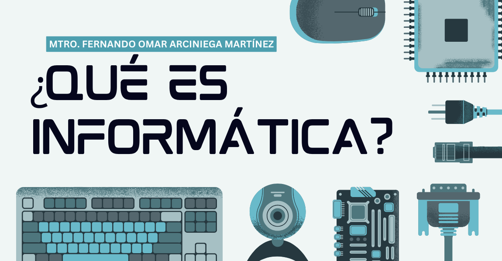

¿Qué es el Bachillerato en Informática?
El Bachillerato Técnico Profesional en Informática es una carrera que te proporciona los conocimientos y habilidades necesarias para desenvolverte en el mundo de la tecnología y la informática. Aprenderás sobre desarrollo de software, redes, bases de datos, sistemas operativos y mucho más.

Perfil del Egresado
Al finalizar tus estudios, serás capaz de...
- Desarrollar aplicaciones de software.
- Administrar y mantener redes informáticas.
- Gestionar bases de datos.
- Brindar soporte técnico.
- Participar en proyectos tecnológicos.
Campo Laboral
Como Bachiller Técnico Profesional en Informática, podrás trabajar en...
- Empresas de desarrollo de software.
- Departamentos de informática de diversas organizaciones.
- Empresas de consultoría tecnológica.
- Centros de soporte técnico.
- De forma independiente como freelance.
Plan Académico
El plan de estudios esta dividido por 3 años.
10 Grado
- Español
- Sociologia
- Fisica Elemental
- Quimica
- Biologia
- Matemáticas
- Educacion Fisica
- informatica
- Historia de Honduras
11 Grado
- Español Aplicada a Informática
- Filosofia Aplicada a Informática
- Ofimatica
- Informática Aplicada
- Legislacion Aplicada a Informática
- Matemáticas Aplicada a Informática
- Fisica Aplicada a informatica
- Programacion
- Analisis y Diseño de Sistemas
12 Grado
- Producciones Digitales
- Mantenimiento Y Reparacion
- Redes
- Programacion
- Gestion Empresarial
- Desarrollo Web
- Practica Profesional (1 mes y 2 semanas)
Contacto
Para más información, puedes contactarnos a través de...
- Teléfono: 9430-8708
- Correo Electrónico: Intae2025@gmail.com
- Dirección: